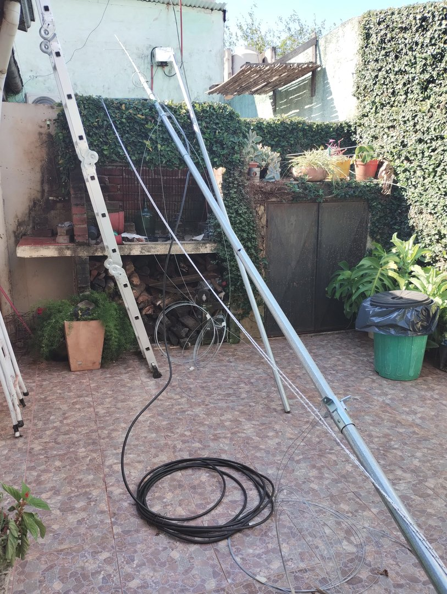
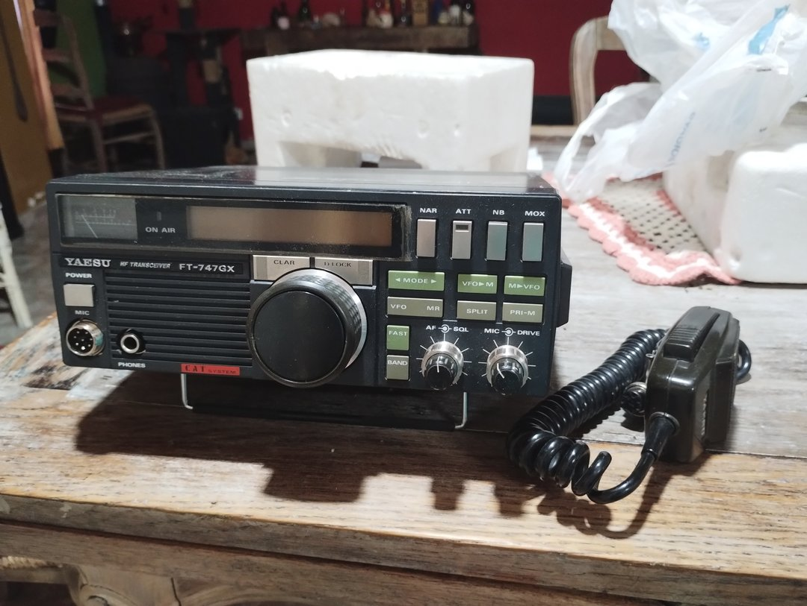

Una nueva casa para LU1IDC
Publiqué una nueva versión del sitio. El álbum DXCC, el globo de grillas y el libro de guardia forman ahora parte de una página renovada que conserva su espíritu lupinero.
Momentos de la estación, proyectos y cosas que fui aprendiendo en el camino.
Publiqué una nueva versión del sitio. El álbum DXCC, el globo de grillas y el libro de guardia forman ahora parte de una página renovada que conserva su espíritu lupinero.
Entre cables, radio y proyectos, la estación va tomando forma. Cada cambio trae una excusa para seguir experimentando.

Probé el servidor MCP de QLog: ahora puedo hacerle preguntas al log y descubrir detalles que antes se perdían entre los registros.
Ver el software →QSLet sigue creciendo para que cada QSO pueda tener su saludo digital, hecho con el estilo de la estación.
Conocer QSLet →En 10 metros hice mi primer contacto con Rusia y, con él, mi primer DX. Hasta entonces esa distancia era algo que veía en mapas y registros; ese día hubo otra estación al otro lado.
Mi primer contacto por satélite llegó a través del SO-50. Una forma distinta de salir al aire, siguiendo el paso del satélite y aprovechando esos minutos en que las estaciones pueden encontrarse.
Después de tantos años, llegó mi primer contacto en HF. Fue en la banda de 40 metros: una nueva etapa de la radioafición que había esperado mucho tiempo para vivir.
Quedó lista mi primera antena de HF: un fan dipolo que construí para las bandas de 40, 20 y 10 metros. Después de preparar el mástil y trabajar en el patio, por fin tenía cómo poner el FT-747GX en el aire. Faltaba hacer el primer contacto.

El FT-747GX ya estaba en casa, pero faltaba preparar la antena para salir en HF. En diciembre tocó trabajar en el patio: mástil, cables y todo lo necesario para empezar a montar la estación. El primer contacto llegaría al mes siguiente.

Veinte años después de obtener mi licencia, llegó a la estación mi primer equipo de HF: un Yaesu FT-747GX. Con la radio en casa, el regreso al aire empezaba a tomar forma. Faltaba preparar la antena y hacer el primer contacto.

Con mi licencia recién obtenida y una radio prestada, hice mi primer contacto como radioaficionado en la banda de 2 metros. Fue una salida al aire modesta, pero para mí significó empezar por fin a usar mi propia distintiva.